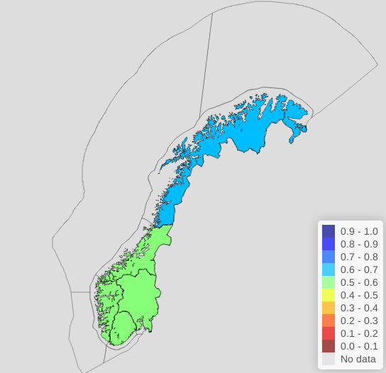
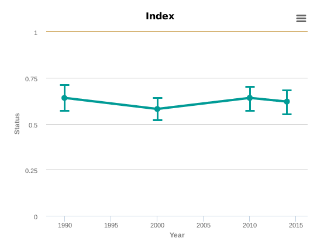
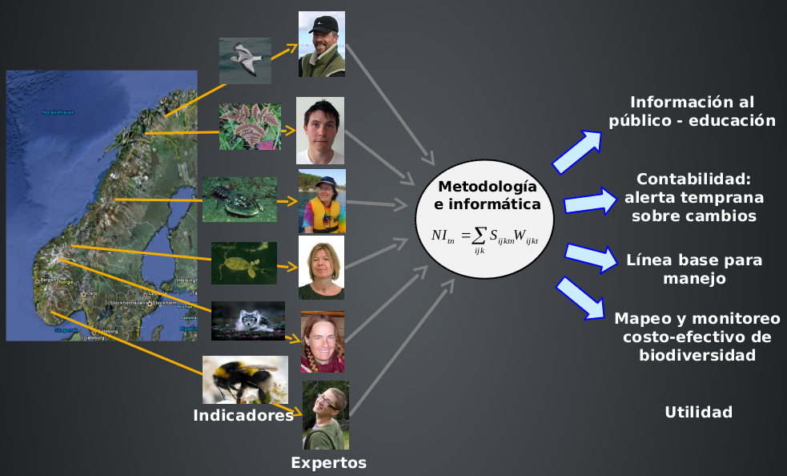

El Índice de Naturaleza de los sitios Ramsar de Costa Rica
Un proyecto piloto para sintetizar el estado de la biodiversidad
Manuel Vargas (mfvargas@gmail.com)María Auxiliadora Mora (mariamoracross@gmail.com)
Taller de cierre del Proyecto Humedales San José, 23 de julio de 2018

El Índice de Naturaleza de Noruega
- El Índice de Naturaleza (IN) sintetiza el estado de la biodiversidad en los ecosistemas a través de una selección de indicadores.
- En Noruega, se utiliza para reportar metas nacionales ambientales.
- Se incluye como un indicador de desarrollo sostenible en el presupuesto nacional.
El Índice de Naturaleza de Noruega


Los indicadores del Índice de Naturaleza se reportan para un conjunto de unidades geoespaciales de análisis (ej. municipios) en periodos de tiempo determinados (ej. cada cinco años).
Los indicadores
- Son variables naturales relacionadas con la biodiversidad (ej. una especie o un grupo de especies) del área en estudio como, por ejemplo, densidad, abundancia o distribución.
- Pueden obtenerse a través de muestreo, modelos teóricos o criterio de expertos.
- Tienen un valor entre 0 y 1:
- 0: condición muy alterada (ej. la especie se ha extinguido).
- 1: condición poco alterada que corresponde al "estado de referencia" natural del indicador.
Ejemplo de indicador
El estado de referencia de los indicadores
- Un valor de 1 en un indicador refleja un estado que se aproxima a su estado natural o de referencia.
- Representa un estado ecológicamente sostenible del indicador y que minimiza la probabilidad de su extinción.
- Ejemplo de estado de referencia para un indicador correspondiente a una especie de aves: 8 parejas por km2. Entonces:
- 6 parejas: valor = 0.75
- 4 parejas: valor = 0.50
Cálculo del Índice de Naturaleza
- El Índice de Naturaleza se calcula como un promedio ponderado de los valores de los indicadores.
- Algunos "indicadores clave" (ej. predadores mayores) pueden tener un peso mayor que el resto, ya que pueden reflejar mejor el estado del ecosistema.